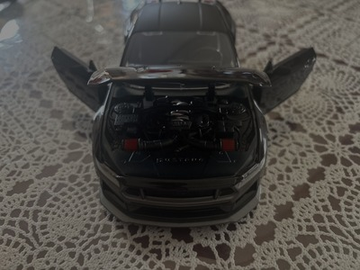

I really enjoy music and love to listen to different styles of it. Some of my favorites are indie, early 2000s reggaeton and pop, and I'm currently going through a norteño phase. Music is a very big aspect of my culture and me as a person. I listen to music all the time and also enjoy collecting posters, vinyls, and going to concerts and music festivals.
I collect vinyls and posters from all different genres (mainly Spanish and indie). Recently, I began collecting vintage Mexican vinyls from the 70s–90s. Where I live, there are a lot of record shops, and I frequent eBay to find new vintage vinyls for sale.
Here are some pictures and a video of my posters and vinyls. :)
I also really like cars, specifically Japanese drift cars. One I think is very cute is the Nissan 350Z. Its shape reminds me of a beetle because of its roundness, and I really like how sharp the head/tail lights are.

American muscle cars are also one of my favorites—specifically the Mustang Dark Horse. I collect car figures and have a couple of that car in different sizes! My most recent one is from the Fast and Furious line, in black. The doors, trunk, and hood are all articulated, and it comes with a stand to display it!
I love everything about many different kinds of cars! Here is my Pinterest to see more cars and posters about cars!
colorssss